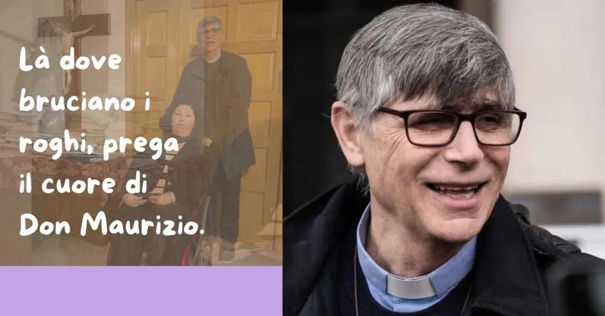
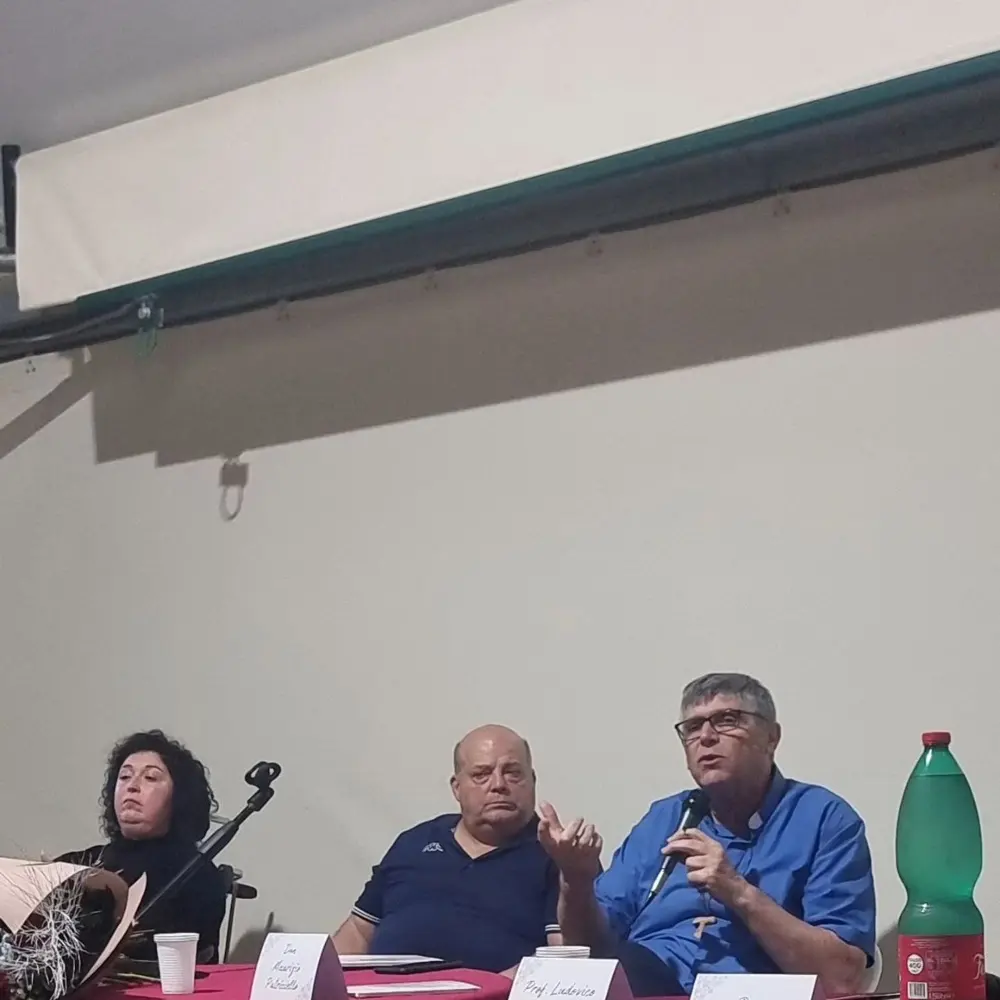

Là dove bruciano i roghi, prega il cuore di Don Maurizio.

Penso a ciò che ha scritto Don Maurizio, mio zio:, tutti lo conoscono per la Terra dei Fuochie dei mille roghi e racconta di quelle notti insonne illuminate dal bagliore dei lampeggianti fuori dalla finestra, con Carabinieri, Polizia e Guardia di Finanza che vegliano su di lui.
È il suo quotidiano a Caivano, sotto scorta da anni per aver dato voce contro i veleni della Terra dei Fuochi e la camorra.
Quelle parole su Famiglia Cristiana mi stringono il cuore: lui che si sente quasi in colpa per i protettori al freddo fuori, mentre sussurra piano «Non sono un eroe, resto prete anche per chi mi vuole morto».
.Come nipote lo stimo tanto, lo conosco da sempre nella famiglia ma il nostro legame si è fatto più stretto negli ultimi anni.
La gioia della sua presenza alla presentazione
Con il mio primo libro lo invitai alla presentazione, temendo fosse troppo poco per lui, scortato e preso da battaglie così grandi. Invece venne, con una gioia così vera, quella fu la mia felicità immensa.
Da allora ci vediamo di più: quando la salute me lo permette, vado in chiesa a Caivano per un saluto, un sorriso, un silenzio pregato insieme.

Don Maurizio li chiama "Fratelli" anche i camorristi minacciosi
Per me non è il prete anticamorra dei giornali: è zio Maurizio che chiama "fratelli" pure i camorristi delle lettere minatorie, ricorda i loro nomi dai campi estivi, piange i ragazzi persi tra droga e roghi tossici della Terra dei Fuochi.
Sotto la sua lotta batte un cuore che soffre per ogni ferita umana, che non si arrende davanti al male ma lo guarda con occhi di misericordia.
Santità delle mani callose e semplici
La mia stima per Don Maurizio è quieta e profonda: cerca una santità semplice, non da eroe ma da uomo vero, come quella della mamma analfabeta che non sa leggere ma sveglia i figli con l’amore, del panettiere che impasta il pane all’alba senza mai mancare, dello spazzino che raccoglie i rifiuti velenosi tra i roghi senza una parola di lament.
È la santità nascosta che lui ama tanto, quella che Dio vede nel quotidiano, senza riflettori né titoli di giornale.
Nel mio prossimo libro, che esce tra pochi giorni, ho scritto una poesia per lui: versi semplici, nati da questo affetto puro, per dire grazie a un cuore che mi insegna ogni giorno cosa significa essere umano davanti a Dio.
Paura di separarsi dal suo popolo
Le minacce lo isolano dal suo popolo, lo tengono chiuso in casa o in chiesa con la scorta sempre vicina. Ma la sua paura più grande non è la morte o il martirio, io questa cosa l'ho capita, quello lo spaventa, da uomo vero qual è. La sua angoscia è sentirsi lontano da chi lo odia, non poter più abbracciare il suo gregge, non riuscire a essere prete per tutti.
Vuole restare prete di tutti, pregare per la salvezza eterna anche di chi gli augura la morte, sentirsi corresponsabile davanti a Dio della vita eterna di ogni persona, pure dei suoi persecutori.
Abbraccio da una nipote qualunque a Don Maurizio
Quel legame di sangue e fede che ci unisce da sempre, in Lui, è più forte di ogni distanza, più forte delle scorte e delle minacce. Zio Maurizio, non sono nessuno, solo una nipote che ti vuole tanto bene e ti è vicina col cuore ogni giorno, vicina nelle tue notti di preghiera sotto i lampeggianti, vicina nelle tue ferite nascoste, vicina nella tua missione quotidiana.
Il tuo Vangelo vissuto piano, così umile e concreto, è la luce più potente che conosco: prego per te col cuore pieno, ti abbraccio forte da lontano, e dico a tutti che un cuore come il tuo cambia il mondo senza far rumore, solo con la forza quieta della preghiera e dell’amore.